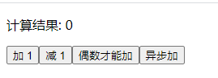

001-redux介绍
redux不是react官方推出的，不一定和react绑定使用，也可以和vue/angular使用
1、一个最简单的demo

如果用普通的react实现，代码如下:
export default class App extends Component {
state = {
num: 0
};
// +1
add () {
this.setState({
num: this.state.num + 1
});
}
// -1
subt () {
this.setState({
num: this.state.num - 1
});
}
// 偶数+1
addifeven () {
if (this.state.num % 2 === 0) {
this.setState({
num: this.state.num + 1
});
}
}
// 异步+1
addAsync () {
setTimeout(() => {
this.setState({
num: this.state.num + 1
});
}, 1000);
}
render() {
return (
<div>
<p>计算结果: {this.state.num}</p>
<button onClick={() => this.add()}>加 1</button>
<button onClick={() => this.subt()}>减 1</button>
<button onClick={() => this.addifeven()}>偶数才能加</button>
<button onClick={() => this.addAsync()}>异步加</button>
</div>
)
}
};
改造成redux
- 新建
/src/redux/store.js和/src/redux/count_reducer.js
- store全局只有一个，所以就一个
store.js - reducer有多个，所以从文件名上就要区分是哪个
定义reducer
`/src/redux/count_reducer.js` 内容
/*******************************
* reducer的作用: 初始化数据（页面一打开的时候） + 更新数据
*
* redux初始化数据
* preState=undefined
* action={type:'@@redux/INIT随机字符串'}
*
* redux更新数据
* preState=当前state数据
* action={type:派发来的事件, data:派发来的数据}
******************************/
const initState = 0; // 初始化值
export default function countReducer(preState = initState, action) {
const {type, data} = action;
switch (type) {
case 'add-action': // 加
return preState + data;
case 'jian-action': // 减
return preState - data;
default: // 没有action匹配上，说明是redux初始化，把默认数据返回进行初始化
return initState;
}
}
定义store
// `/src/redux/store.js` 内容
import {createStore} from 'redux';
import countReducer from './count_reducer'
export default createStore(countReducer); // 暴露store
- 修改页面代码
import React, { Component } from 'react';
import store from './redux/store';
export default class App extends Component {
componentDidMount() {
// 监听redux数据改变
store.subscribe(() => {
this.setState({}); // 重新出发render
});
}
add () {
store.dispatch({ type: 'add-action', data: 1 });
}
jian () {
store.dispatch({ type: 'jian-action', data: 1 });
}
addifeven () {
if (store.getState() % 2 === 0) {
store.dispatch({ type: 'add-action', data: 1 });
}
}
addAsync () {
setTimeout(() => {
store.dispatch({ type: 'add-action', data: 1 });
}, 1000);
}
render() {
return (
<div>
<p>计算结果: {store.getState()}</p>
<button onClick={() => this.add()}>加 1</button>
<button onClick={() => this.jian()}>减 1</button>
<button onClick={() => this.addifeven()}>偶数才能加</button>
<button onClick={() => this.addAsync()}>异步加</button>
</div>
)
}
};
store.getState(): 获取store里面的数据，每次要store数据就调用一次store.dispatch(action): 触发reducerstore.subscribe(): 监听store数据的改变this.setState({}): 触发react的render()
redux不是为react或者vue设计的，所以redux没有响应式数据，修改后不会自动更新react里面的数据，需要开发者自己每次需要获取数据的时候，就调用
store.getState()去获取
2、action
在上面的例子总，我们是自己定义一个json格式 { type: 'add-action', data: 1 } 作为action，并且多个地方写死字符串add-action不好维护
而真正项目中，action应该是由函数创建好，并且actionName应该放在一个js中统一维护
新建/src/redux/constant.js 用于维护actionName常量名称
新建/src/redux/count_action.js 用于创建action对象
// constant.js 内容
export const addActionName = 'add-action';
export const jianActionName = 'jian-action';
编写count_action.js
// count_action.js 内容
// 定义创建action的函数
import {addActionName, jianActionName} from './constant'
export const createAddAction = (data) => {
return {type: addActionName, data};
};
export const createJianAction = (data) => {
return {type: jianActionName, data};
};
这样，页面上调用store.dispatch({type: 'add-action', data: 1})的就需要对应的改为store.dispatch(createAddAction(1))
同时，reducer里面写死的actionName应该改为引入常量js
switch(type) {
// case 'add-action'
case addActionName:
return preState + data;
case jianActionName:
return preState - data;
default:
return preState;
}
3、异步action
在redux，我们用{type: <actionName>, data: <data>} 定义一个action，这种属于同步action
默认情况下，redux不支持异步action，需要再使用一个第3方库redux-thunk，引入后，就可以定义异步action
- 异步action是一个函数，比如
store.dispatch(() => {}) - 同步action是一个json格式，比如
store.dispatch({type: <actionName>, data: <data>})
- 通过
npm i redux-thunk后，修改/src/redux/store.js的内容
import {createStore, applyMiddleware} from 'redux'
import thunk from 'redux-thunk'
import countReducer from './count_reducer';
// 多了个redux-thunk中间件，需要用applyMiddleware()
export default createStore(countReducer, applyMiddleware(thunk));
- 就可以用异步action了
// 异步加
addAsync () {
setTimeout(() => {
store.dispatch({ type: 'add-action', data: 1 });
}, 1000);
}
改为
addAsync () {
// 派发异步action
store.dispatch((dispatch) => {
setTimeout(() => dispatch(createAddAction(1)), 500);
});
}
进一步，异步action也应该和同步action一样，定义到/src/redux/count_action.js里面
// src/redux/count_action.js
export const createAddAsyncAction = (data, deploy) => {
return (dispatch) => {
setTimeout(() => dispatch(createAddAction(1)), deploy);
};
}
这样，页面就改为派发这个createAddAsyncAction()
// App.jsx
addAsync () {
store.dispatch(createAddAsyncAction(1, 500));
}